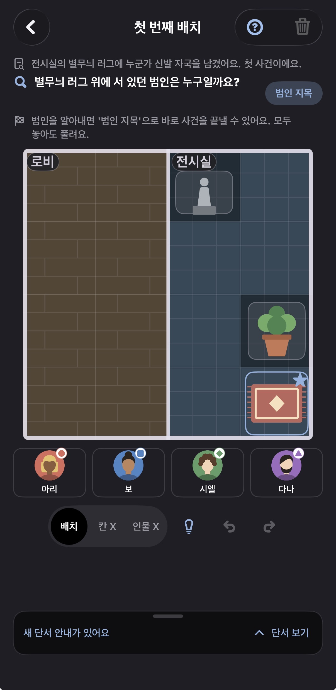
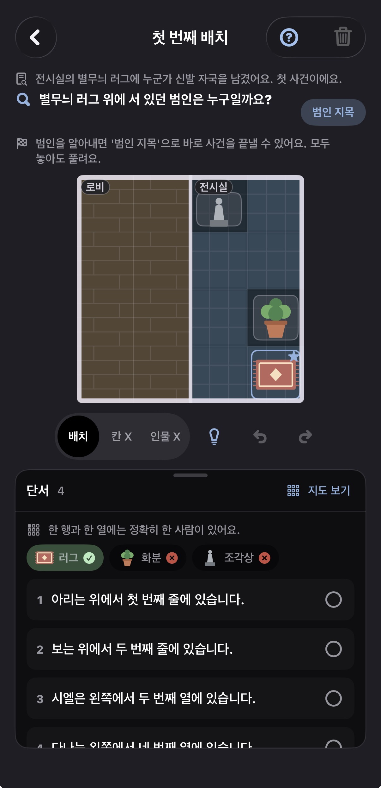
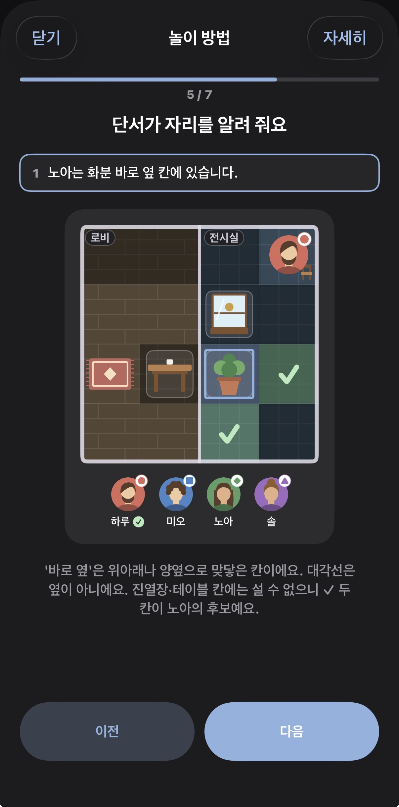
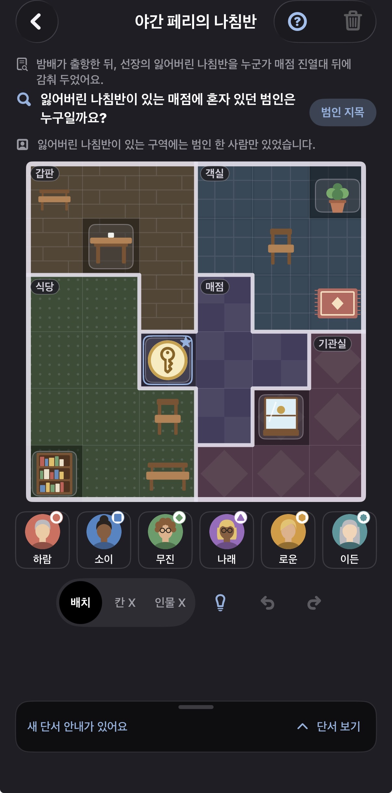

연습으로 가볍게 시작
놀이 방법과 연습 퍼즐로 기본 규칙을 익혀요.
단서를 읽고, 인물의 자리를 찾고, 사건 현장에 있던 범인을 밝혀 보세요. 한 칸씩 맞아떨어지는 추리의 즐거움.
수사 방법 살펴보기 ↗
CASE FILE글로 읽은 단서를 지도 위에 펼쳐 보세요. 가능한 자리를 좁혀 가다 보면, 흩어진 정보가 하나의 답으로 이어집니다.

질문과 인물, 물건, 구역을 확인하세요. 단서를 누르면 지도에서 관련 위치가 빛나요.

칸 X와 인물 X로 후보를 좁혀 보세요. 한 줄과 한 열에는 정확히 한 사람만 있어요.

단서들을 연결해 사건 현장에 있던 인물을 찾아내고, 범인 지목으로 답을 확인하세요.
실제 앱 화면을 사용했습니다.
놀이 방법과 연습 퍼즐로 기본 규칙을 익혀요.
인물 배치와 제외 표시, 되돌리기와 다시 하기로 생각을 정리해요.
힌트를 열어 추리의 실마리를 찾고 수사를 이어 가세요.
플레이 안내와 자주 묻는 질문을 확인하거나 문의해 주세요.